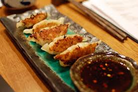

Home
Gyoza

The Crispy-Juicy Weeknight Upgrade
Gyoza are Japanese pan-fried dumplings featuring a savory filling (traditionally pork and cabbage) sealed in a thin, delicate wrapper. Their signature appeal lies in the dual texture: a golden, crunch-tastic bottom and a tender, steamed top.
Why you'll love them: They are a high-reward "project meal" that is easier than it looks and freezes beautifully, allowing you to stash a restaurant-quality dinner for your busiest nights.
INGREDIENTS
For the Filling:
- ¾ lb green cabbage (¼ large head)
- 1 tsp Diamond Crystal kosher salt (for salting the cabbage)
- 2 green onions/scallions
- 2 shiitake mushrooms
- 2 cloves garlic
- 1 tsp ginger (grated, with juice; from a 1-inch, 2.5-cm knob)
- ½ lb ground pork
For Folding the Gyoza:
- 1 package gyoza wrappers (52 sheets per 10-oz/284-g package)
- water (to fold and seal the wrappers)
For Frying Each Batch:
- 1 Tbsp neutral oil
- 4 Tbsp water
- 1 tsp toasted sesame oil
For the Dipping Sauce:
- rice vinegar (unseasoned) (1 Tbsp per serving)
- soy sauce (1 Tbsp per serving)
- la-yu (Japanese chili oil) (⅛ tsp per serving; optional; Japanese chili oil is not too spicy)
Instructions:
- Gather all the ingredients.
To Make the Filling
- Discard the thick core of ¾ lb green cabbage and cut it into thin strips about ⅓-inch (1 cm) wide.
- Finely chop the strips crosswise into very small pieces, especially the thick white parts of the leaves. Then, run your knife through the cabbage to mince it finer.
- Sprinkle the minced cabbage with 1 tsp Diamond Crystal kosher salt and massage together with your hands. Transfer it to a bowl and set aside until the cabbage is wilted. Tip: Alternatively, you can blanch or microwave the cabbage for a minute or two to soften the thick and hard leaves. Or, you can skip wilting altogether.
- Mince 2 green onions/scallions into small pieces.
- Remove the stems from 2 shiitake mushrooms and mince the caps into small pieces.
- Grate the ginger with a ceramic grater and add 1 tsp ginger (grated, with juice) to a small plate. Mince or press 2 cloves garlic and add to the plate.
- Combine the green onions, shiitake mushrooms, and ½ lb ground pork in a large bowl. Then, add the seasonings: 2 tsp sake, 2 tsp toasted sesame oil, 2 tsp soy sauce, and ⅛ tsp freshly ground black pepper. Finally, the grated ginger and garlic.
- Mix well and knead the mixture with your hand (I wear plastic disposable gloves) until it becomes sticky and pale in color.
- Next, squeeze the water out from the salted cabbage and add to the meat mixture.
- Knead the mixture again with your hand to evenly distribute the cabbage into the meat.
To Fold the Gyoza
- Prepare a small bowl of water and a baking sheet lined with parchment paper or dusted with 2 Tbsp potato starch (or cornstarch). Open 1 package gyoza wrappers and cover them with a damp towel or plastic wrap at all times so they don‘t dry out.
- Place a wrapper in the palm of your non-dominant hand (left hand for me). Use a small cookie scoop to place a scant 1 Tbsp or less of filling in the center. Do not overstuff. (If you‘re new to gyoza making, use ¾ Tbsp of filling.) Flatten it with the scooper bowl, making sure to press out any air pockets in the filling.
- Dip one finger in the water and use it to moisten a circle around the outer ¼ inch (6 mm) of the wrapper. Fold the wrapper in half over the filling and pinch the two sides together at the top center, but don’t seal it yet.
- In this recipe, we fold gyoza with the pleats leaning toward the center.
- Start on the right side near the top center. To make the first pleat, use your right thumb and index finger to fold the wrapper‘s top half into a pleat that leans toward the center. Use your left thumb and index finger to press the folded pleat tightly against the back half of the wrapper.
- Repeat folding along the right side about once every ¼ inch (6 mm), making 3–4 pleats total.
- Press down the pleats to seal any gap.
- Now, pleat the left side of the gyoza, starting near the top center. To make the first pleat, use your left thumb and index finger to fold the wrapper‘s top half into a pleat that leans toward the center. Use your right thumb and index finger to press the folded pleat tightly against the back half of the wrapper.
- Repeat folding along the left side about once every ¼ inch (6 mm), making 3–4 pleats total.
- Press the pleats one last time.
- Evenly distribute the filling and shape the gyoza to create a flat side on the bottom.
- Place your finished gyoza on the baking sheet and cover with plastic wrap to avoid drying. Repeat to fold the remaining wrappers.
To Freeze Uncooked (optional)
- If you want to store uncooked gyoza to cook later (optional), now is the time to freeze them. Before the filling starts to release moisture and make the wrappers soggy, lay out the gyoza on a sheet pan or plate in a single layer so they‘re not touching. Then, cover with plastic wrap or a large resealable bag. Place the sheet pan in the freezer to flash freeze the gyoza until solid (or at least frozen on the outside).
- Once the gyoza are frozen solid, pack them in an airtight bag. Because you flash froze them, the gyoza won’t stick to each other in the bag. Store the gyoza in the freezer for up to a month. When you’re ready to cook them, place the frozen gyoza directly in your frying pan. Follow the regular cooking instructions below, but steam them for an extra 1–2 minutes.
To Cook the Fresh Gyoza
- Cook the gyoza in batches or use two frying pans. First, dust off any potato starch from the gyoza bottoms using a pastry brush.
- Heat a large nonstick or carbon steel frying pan over medium heat. When the pan is hot, add 1 Tbsp neutral oil. When the oil is hot, place the gyoza in the pan, flat side down. Arrange them in a single layer in a circular pattern, and leave space between each piece so they don‘t touch.
- Alternatively, you can arrange them in one or two rows. Leave space between each piece so they don‘t touch each other.
- Cook until the bottom of the gyoza turns golden brown, about 3 minutes. Then, add 4 Tbsp water to the pan and immediately cover with a lid.
- Steam the gyoza for about 3 minutes or until most of the water evaporates. Tip: If you‘re cooking frozen gyoza, steam them for an extra 1–2 minutes.
- Remove the lid to evaporate any remaining water. Drizzle 1 tsp toasted sesame oil around the gyoza in the frying pan. Cook, uncovered, until the gyoza is browned and crisp on the bottom.
- Remove to a plate. Repeat the process to cook the other batches.
To Serve
- Transfer to a serving plate and serve with individual bowls of dipping sauce on the side. For each individual serving, combine 1 Tbsp rice vinegar (unseasoned), 1 Tbsp soy sauce, and the optional ⅛ tsp la-yu (Japanese chili oil) in a small dipping bowl and mix together. Enjoy!